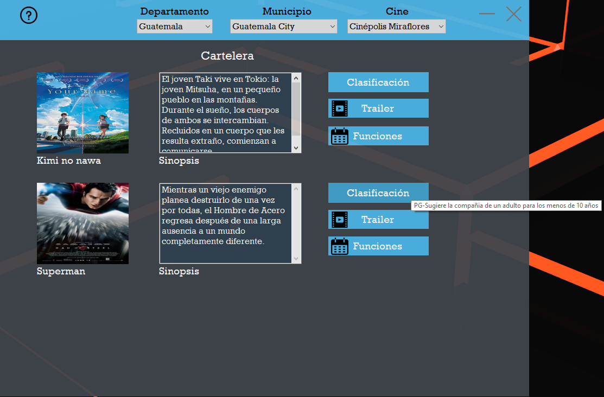

En esta pantalla se muestran 3 desplegables en donde se tendrá que elegir el Departamento, eso cargará el desplegable de la derecha con los municipios del departamento escogido. Luego de seleccionar el municipio se cargará el desplegable de la derecha con los cines disponibles de acuerdo con las elecciones hechas.

Al realizar su elección en los 3 desplegables se mostrarán las películas disponibles con su imagen, clasificación y sinopsis respectiva del cine seleccionado.
Si se presiona el botón de cartelera Trailer se abrirá una nueva ventana con el tráiler de la película.
Si se presiona Funciones se moverá a otra ventana de Funciones.

Al pasar el cursor sobre “Clasificación” de alguna película se mostrará la clasificación y descripción de la clasificación sobre la película.
La opción de ayuda se muestra con el ícono de pregunta del lado superior izquierdo y tiene la finalidad de dar a conocer el funcionamiento correcto del sistema. Esto con el fin de proporcionar una herramienta que solucione las dudas del usuario relacionadas al sistema.